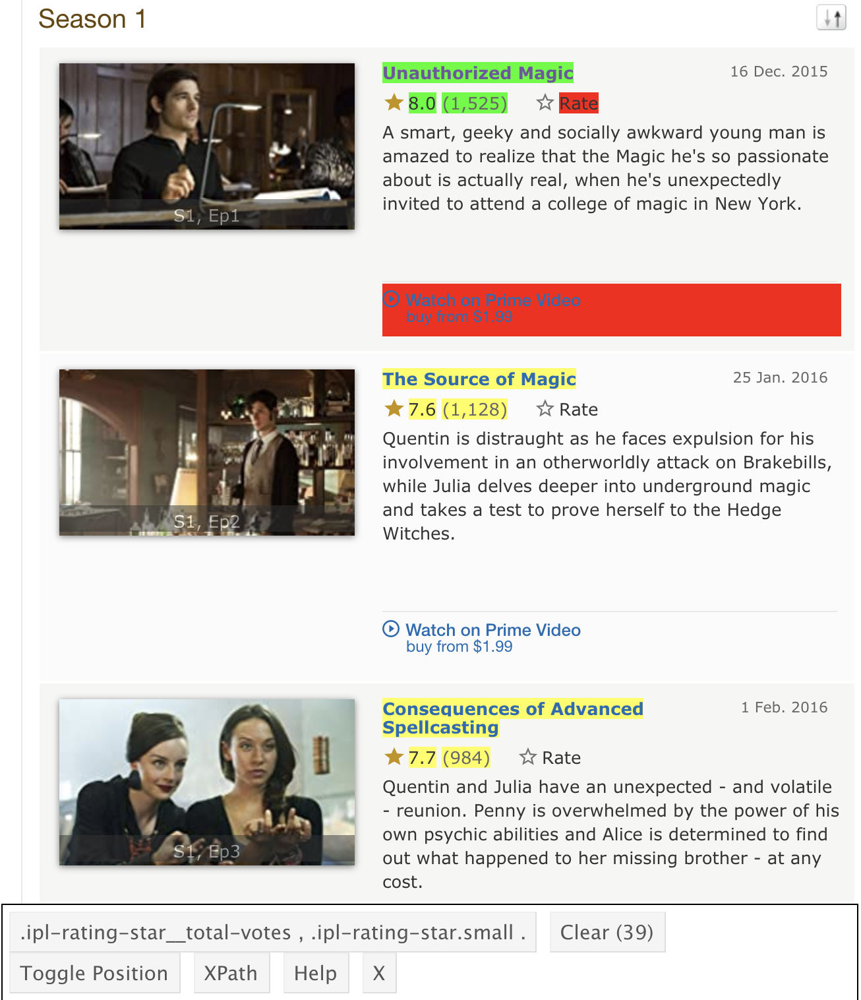

I love The Magicians. I was in the midst of rewatching this wonderful show recently and as I did, I felt a feeling. This feeling often crops up when rewatching a series or watching a show with someone who hasn’t seen it before: it takes a few episodes to reach it’s stride. I knew what was going to happen and I latched on to my favorite bits, but it’s a different experience on first blush. I remember being quite confused when first watching the series, only to really get into it a few episodes in (maybe it was a whole season?).
This made me curious what other people thought about the show, episode-by-episode. This curiosity took me down a pleasant little rabbit hole, discovering how rvest can make easy work of web scraping in R.
Let’s do some magic with rvest!
My basic goal was to grab the IMDb ratings of The Magicians for each episode and plot them over time. This turned into a little exercise in how to use rvest to get the data.
library(tidyverse) # cause duh
library(rvest) # for web scraping
library(glue) # for that warm and fuzzy fstring feeling (python-like)
theme_set(theme_light()) # for cleaner plots (David Robinson screencasts are rubbing off)
library(RColorBrewer) # for a nicer set of colorsI started out learning the basics of rvest from Rstudio’s blog. Was able to get the ratings quite easily thanks to selectorGadget, a lovely little plugin for selecting what you want to scrape off the html structure by CSS tags (it’s my new favorite thing! :heart:). After scraping, I had the ratings as a vector, which I could convert into a tibble.
# how I started exploring
# define url
base_url <- "https://www.imdb.com/title/tt4254242/episodes?season=1"
# go get the html
html <- read_html(base_url)
# grab ratings
rating <- html_nodes(html, ".ipl-rating-star.small .ipl-rating-star__rating") %>%
html_text(trim = TRUE)
# make a dataframe
df <- tibble(rating)At this point, I could go back and take a bigger bite: grab more stuff from each page and add in a for loop to grab data for all seasons. Here’s a look at selectorGadget in action:

And here’s the code I ended up with:
# list of seasons
seasons = seq(1,5)
# empty list to store dataframes
df_list = list()
# lez go!
for (season in seasons) {
# define url, using glue for combining strings
base_url <- "https://www.imdb.com/title/tt4254242/episodes?season="
season_url <- glue("{base_url}{season}")
# go get the html
html <- read_html(season_url)
# isolate the desired data
title <- html_nodes(html, "#episodes_content strong a") %>%
html_text(trim = TRUE)
rating <- html_nodes(html, ".ipl-rating-star.small .ipl-rating-star__rating") %>%
html_text(trim = TRUE) %>%
as.numeric()
votes <- html_nodes(html, ".ipl-rating-star__total-votes") %>%
html_text(trim = TRUE) %>%
parse_number() # this saved the day! super helpful readr function
air_date <- html_nodes(html, ".airdate") %>%
html_text(trim = TRUE) %>%
parse_date("%d %b. %Y")
# make a tibble for each season
df <- tibble(air_date, title, rating, votes) %>%
mutate(season = season,
episode = seq(1, nrow(.))) %>%
select(season:episode, everything())
# add to list
df_list[[season]] <- df
}
# smoosh the list into one tibble
magicians <- bind_rows(df_list)Some notes:
list() in R, then run bind_rows() from dplyr. Also found myself writing python-like code, only to realize it needed minor syntax tweaks (stricter for loops, for example).parse_date() for air_date in this case since The Magicians never aired an episode in May. Will come up later.season and episode columns for each tibble is a nice trick. I know the season given the value in the for loop and episode numbers can just come from a sequence counter. Will have to look further into understanding what the period means inside nrow in a dplyr chain (references the current object, I guess?)selectorGadget, but there are probably ways to do it all in one go.Now we got the data for the show. Let’s visualize it!
The results show the average weighted rating of a given episode and how many IMDb users that rating is based on. Episodes of The Magicians seem very well-received overall, with an average episode rating of 8.4 across all seasons. Split by season, the average episode rating has a slight increase in the third season.
magicians %>%
group_by(season) %>%
summarise(avg_rating = mean(rating))## # A tibble: 5 x 2
## season avg_rating
## <int> <dbl>
## 1 1 8.12
## 2 2 8.29
## 3 3 8.79
## 4 4 8.48
## 5 5 8.32Plotting the episodes over time, we can see some interesting results. Going off of ratings, the show seems to “hit it’s stride” in the third season, where it had its highest-rated episode. The ratings took the biggest hit with the season four finale, which is quite an eventful one for the show (also interesting how the number of ratings for that episode is bigger than the others). Even so, the worst-rated episode only dips into the low sevens: quite a good run.
magicians_plot <- magicians %>%
mutate(season = factor(season)) %>%
ggplot(aes(air_date, rating)) +
geom_smooth(color = "#dddddd", se = FALSE, linetype = "dashed") +
geom_line(aes(group = season, color = season), alpha = 0.4) +
geom_point(aes(color = season, size = votes), alpha = 0.4) +
scale_color_brewer(palette = "Dark2") +
labs(x = "",
y = "IMDb Rating",
size = "# IMDb Users",
color = "Season",
caption = "Source: IMBb")
magicians_plot +
labs(title = "The Source of Magic",
subtitle = "Weighted Average IMDb Ratings for 'The Magicians'")
Here’s a look at the progression faceted by season. The progression between seasons is easier to see without the spaces where new episodes weren’t airing. The general upward trend is quite steady for the first three seasons, peaking in the 9’s then dipping down to the mid to low 8’s for the last two seasons (excluding the season four finale). Also can see a high volume of users rating episodes for the earlier seasons, with the final season having the fewest users.
magicians_plot +
facet_wrap(~ season, scales = "free_x", nrow = 2) +
labs(title = "No Better to Be Safe Than Sorry",
subtitle = "Weighted Average IMDb Ratings for 'The Magicians' by Season")
Here are some things that could be cool to explore further about The Magicians:
Stay off the garden path.
Well that’s all well and good for The Magicians, but I wanted to make it useful for other shows. So let’s do some wizaRdry that future-me will be thankful for.
Here I convert the above code into a function that can get data for a show on IMDb for a given stretch of seasons.
grab_imdb_ratings <- function(imdb_code, seasons) {
# Grabbing Rating Data for a show on IMDb
#
# - imdb_code: url code for a given show (the "tt<number_string>" in the url)
# - seasons: list of desired seasons
# empty list to store dataframes
df_list = list()
# lez go!
for (season in seasons) {
# define url, using glue for combining strings
base_url <- "https://www.imdb.com/title/"
season_url <- glue("{base_url}{imdb_code}/episodes?season={season}")
# go get the html
html <- read_html(season_url)
# isolate the desired data
title <- html_nodes(html, "#episodes_content strong a") %>%
html_text(trim = TRUE)
rating <- html_nodes(html, ".ipl-rating-star.small .ipl-rating-star__rating") %>%
html_text(trim = TRUE) %>%
as.numeric()
votes <- html_nodes(html, ".ipl-rating-star__total-votes") %>%
html_text(trim = TRUE) %>%
parse_number() # this saved the day! super helpful readr function
air_date <- html_nodes(html, ".airdate") %>%
html_text(trim = TRUE) %>%
str_remove("[.]") %>% # remove periods (May doesn't have a period like the rest: Apr., Oct.)
parse_date("%d %b %Y")
# make a tibble for each season
df <- tibble(air_date, title, rating, votes) %>%
mutate(season = season,
episode = seq(1, nrow(.))) %>%
select(season:episode, everything())
# add to list
df_list[[season]] <- df
}
# smoosh the list into one tibble
show_run <- bind_rows(df_list)
return(show_run)
}And here it is in action:
# simpsons, first ten seasons, plus thirteenth for good measure
grab_imdb_ratings("tt0096697", c(1:10, 13))## # A tibble: 248 x 6
## season episode air_date title rating votes
## <dbl> <int> <date> <chr> <dbl> <dbl>
## 1 1 1 1989-12-17 Simpsons Roasting on an Open Fire 8.2 5694
## 2 1 2 1990-01-14 Bart the Genius 7.7 3636
## 3 1 3 1990-01-21 Homer's Odyssey 7.4 3188
## 4 1 4 1990-01-28 There's No Disgrace Like Home 7.7 3132
## 5 1 5 1990-02-04 Bart the General 8 3178
## 6 1 6 1990-02-11 Moaning Lisa 7.6 3071
## 7 1 7 1990-02-18 The Call of the Simpsons 7.8 2955
## 8 1 8 1990-02-25 The Telltale Head 7.7 2872
## 9 1 9 1990-03-18 Life on the Fast Lane 7.5 2858
## 10 1 10 1990-03-25 Homer's Night Out 7.4 2760
## # … with 238 more rowsInteresting changes:
glue makes it easy to work with.air_date, I realized after testing that my previous method broke for the month of May. This was because I assumed all months had a period after them, but May does not have one. This went undetected since The Magicians doesn’t air any episodes in May. After running a test with The Simpsons, I went back and removed the period before parsing. No more NAs! (the code is probably brittle in other ways. Tread lightly!)Huzzah! Now I can use it for other projects. Won’t that be funzies!
Till next time!

glue package.for loops feel a little foreign in R right now. Practice, practice, practice.for loop with Cmd-Enter. Can execute looping code line-by-line to make sure everything is going smoothly.str_extract("\\d+") sort of worked, except for commas when there were a bunch of reviews. parse_number() from readr to the rescue. Would want to understand further how it behaves in corner cases.selectorGadget is lovelyrvest as a package name.
rvest has a scythe caus—gotcha.soybean by Zach Bogart from the Noun Project
{kind=link}